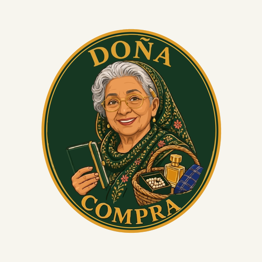

Entrá con la cuenta de administración.
Cada texto y cada imagen del sitio, agrupados como están en la página. Lo que no toques queda como está hoy.
Leyendo la página…
Lo que se publica en la página de Anuncios. Lo que cargues acá aparece en el sitio; lo que borres, desaparece.
Buscando los anuncios…
Lo que se cambia acá cambia en todo el sitio.
El número de WhatsApp no se edita acá: está escrito en el sitio, porque con él se arma el código QR de la página de Contactos, el teléfono de los datos estructurados y todos los botones. Para cambiarlo hay que tocar el sitio y volver a generar el QR, así nunca quedan diciendo números distintos.